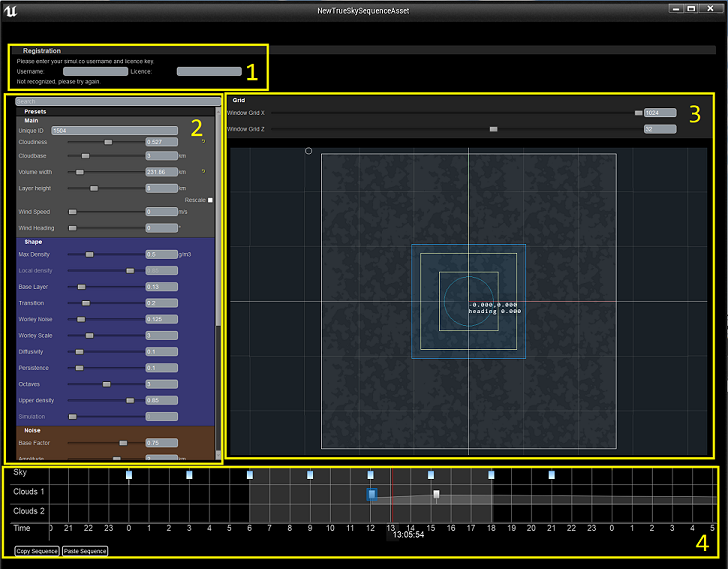
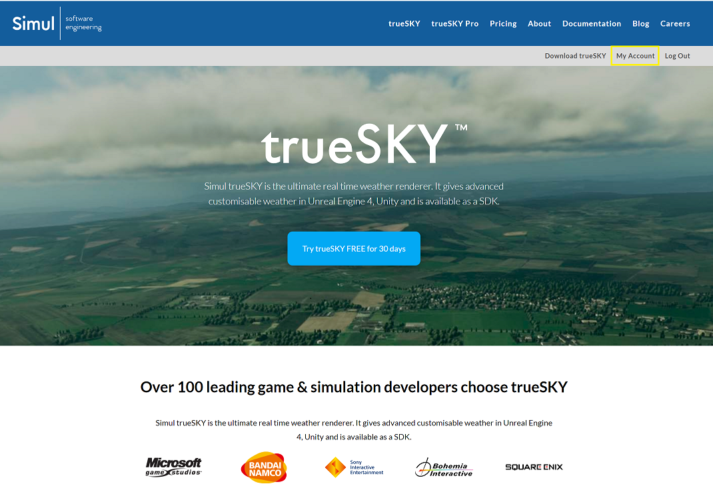
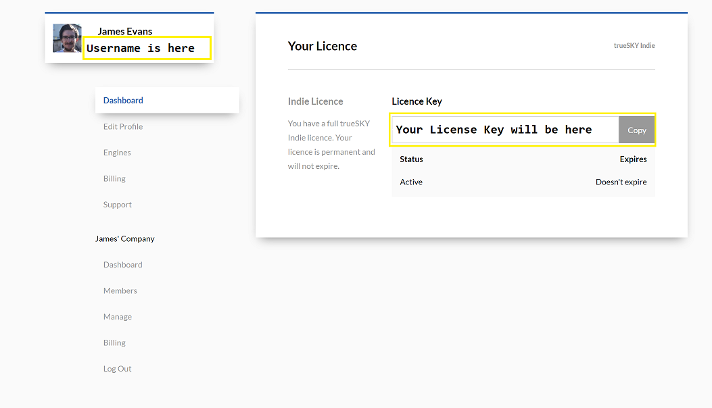
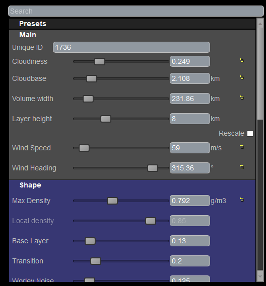
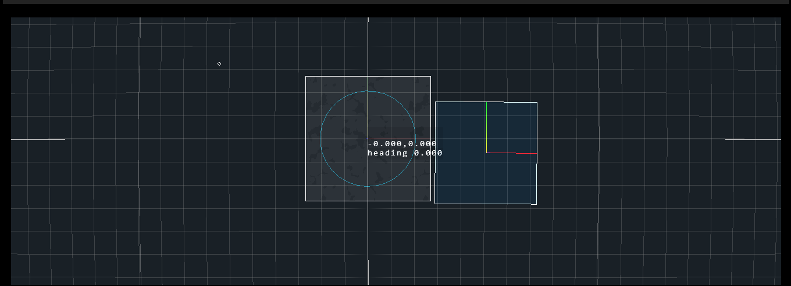

Sky Sequencer Overview¶
The sequencer is made up of 4 distinct parts
Number |
Section Name |
Definition |
|---|---|---|
1 |
Here you can login to your account using your username and licence key, this is needed to edit the sequencer |
|
2 |
If you select an option with editable variables, they will appear here. |
|
3 |
Top down view of the cloud coverage of the world. |
|
4 |
A sequential timeline of all the trueSKY effects that will take place in this sequence |
Registration¶
Before you can edit anything on the Sequencer, you need to have entered your username and valid licence key. This is entered in the registration fields, shown in the picture above. These can be found in your account dashboard at https://simul.co/account. If you do not have an account, sign up now at https://simul.co/register/. We offer a 30 day free trial of trueSKY, but after the trial period you will need to purchase a licence. You can find more information about licensing here.
1: Login to your account at simul.co and click my account.
2: Your username and licence key are in the account dashboard. Your username is at the top left, underneath your name. Your licence key is on the right in the licence section.
4: Launch the active sequence asset using the instructions here
5: In the sky sequencer, enter your username and licence key under ‘registration’. If your details are correct, you will see the text ‘OK’ displayed under the licence key fields.
trueSKY can now be customised within your scene.
Details¶
The details panel contains information about the currently selected keyframe or layer. This can all be edited, with changed taking place in real time. This panel will only show up if you have selected a keyframe.
To edit a keyframe, first select it with left click. This will bring up all the keyframes variables in the details column.
This is the details panel of a selected Cloud Keyframe
Now you can see all the variables that can be altered within the Sequencer. You can either drag the bar to alter the value, or edit the values by typing. All of the values are clamped to certain ranges. Plus, each value can be returned to its default position with the yellow arrow to the right of the value. This arrow will only appear of the value has been changed from it’s default state.
Layers also have their own settings which will change the values of all the keyframes in that layer. An example of this is within the Sky layer, you can change the diameter of the sun. This effect will take place for all the Sky Keyframes. To select a layer, just click on its name in the column to the left of the timeline. To see what each of the settings do, head over to our Cloud, Sky, or Storm pages.
UE4¶
You can also use blueprints to edit the trueSKY environment. Head here to learn how.
Unity¶
You can also edit the trueSKY environment through scripting. Head here to learn how.
Cloud Window¶
The Cloud Window is a top down view of the world, where you can see the current cloud formations, layers and volumes. You can zoom in and out with the mouse wheel, and drag the world around by holding right click and dragging in a direction. Clicking on a keyframe will allow you to drag the keyframes center, which is represented as a square within the cloud window, and will move all volumes in relation to the keyframes origin.
The Red Arc is your current view in the project. This can be helpful for figuring out what direction you are looking in, in relation to trueSKY.
Double clicking will enter Volume Edit mode, where you can individually move and edit volumes. You cannot enter Volume edit mode if there are no volumes on the cloud layer.
If you select a keyframe, the layer width is represented by a blue box, whereas a blue circle represents the precipitation radius. To find out more about how to use the Cloud Window to control precipitation, please view this tutorial.
You can see the cloud formations from the grey box, the current cloud layers origin and width from the blue box, and finally the precipitation radius with the blue circle.
A sequence is a collection of Layers and keyframes, that can be saved and used in any scene that incorporates trueSKY. There can only be one sequence active at a time, although you can switch between them at run-time. You can use sequences to save specific weather formations for set times of the day.